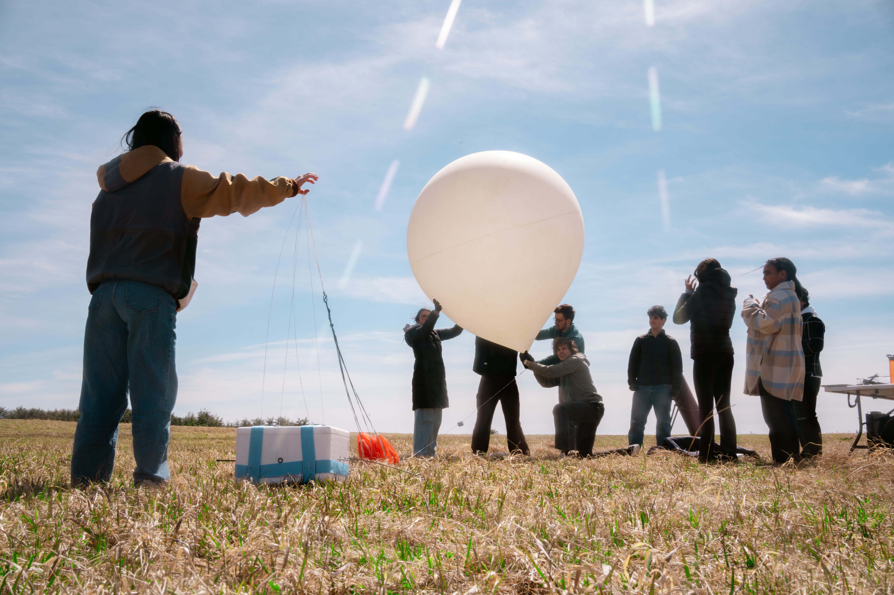
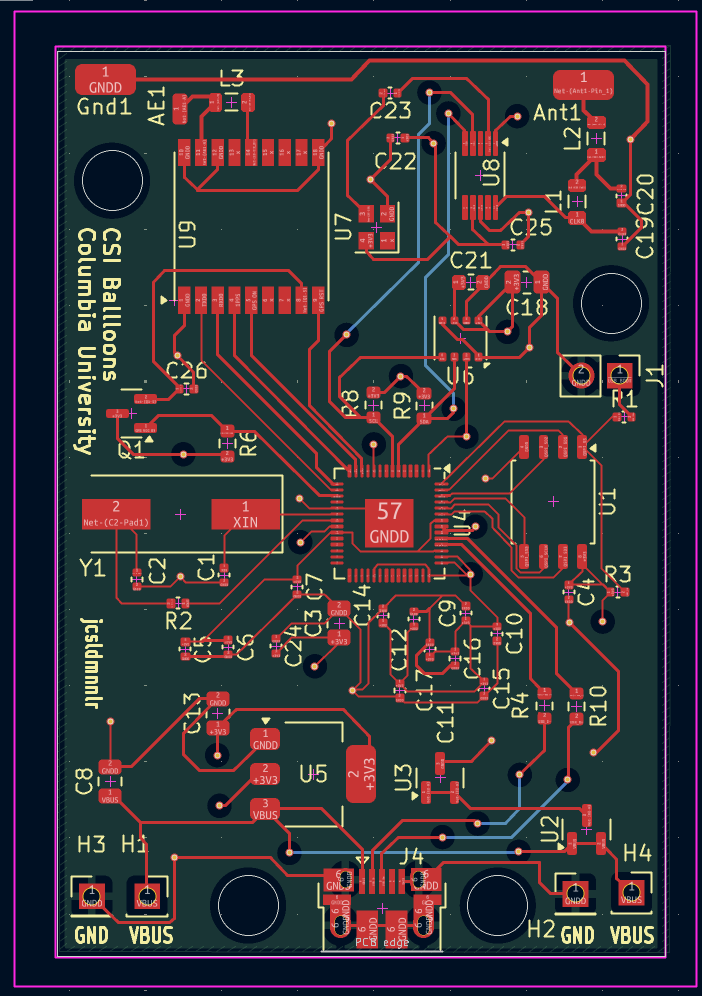
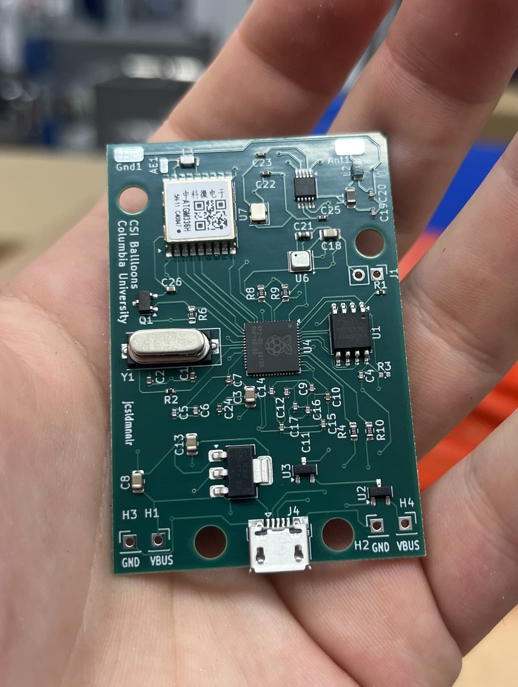
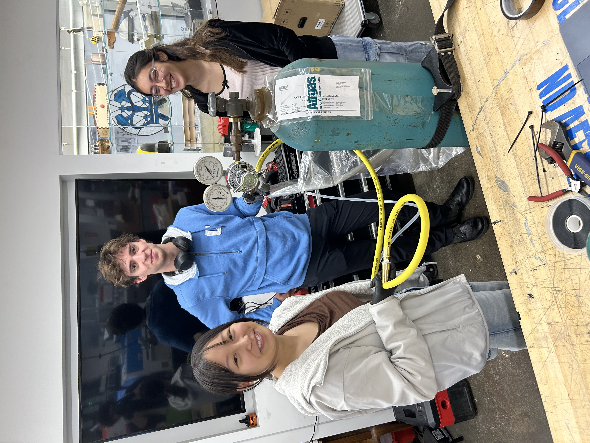
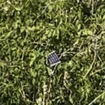

High Altitude Balloons
I'm in my second year as the co-Mission Lead for the Columbia Space Initiative's
high-altitude balloons team. We design and launch high-altitude research devices. I joined the team my freshman year,
and its been an incredible experience where I've learned a lot technically, as well as how to be a leader. We're currently
developing our most ambitious project yet, a ballast system, to control the balloon's altitude in flight both autonomously
and manually.
I'm extremely passionate about this project and want to show you our work and progress. Check out the bottom for the most
up to date info.
Also, checkout this video of one of our launches produced by
one of our very talented team members, Claudio

Meet the team!
Fall 2025
My first year leading the team, and the third year of the balloons mission. We were continuing development
from the previous semester on Pico Balloons, ultra-light boards that get launched on non-expanding mylar balloons,
rise to around 40,000 feet and then (ideally) circumnavigate the globe.

Pico Balloons are so light-weight all you can really afford is your circuit board, solar cells, and antenna. Our boards use the RP2040 microcontroller and an Si5351A clock generator with a TCXO crystal oscillator to transmit WSPR on the 17-meter band (~18 MHz). WSPR is a barebones digital protocol we used to send our location and altitude, encoding our altitude as the power of our transmission. For transmission, we used a 25.9 foot half-wave dipole antenna.

My primary focus was on the RF transmission. WSPR operates on a select few frequencies, one of those being the
17-meter band we chose. To transmit on these frequencies I chose the standard Si5351A clock generator. However,
Si5351 has too much jitter for me to comfortably let it transmit on the narrow band we are looking for (and it
has temperature problems), so I added a TCXO crystal oscillator to provide a master reference. This outputs a
square wave, so I designed a low-pass filter for frequencies above ~21Mhz in order to block out the
higher frequency harmonics.
Spring 2026
This semester we continued testing of the Pico PCB, and prepared for launch when the weather got warmer. In the meantime, we started research on (our current project!) a ballast system for high-altitude balloons. This would allow us the benefits of long duration flight we sought after with the pico balloon while carrying a substantial payload, opening the door for experimentation!

Back to linear storytelling, we spent the beginning of the semester continuing to run tests and iterate on our PCB design. The solar cells we had ordered had crumbled in the box, so we pivoted to flexible solar cells from Zachtek. We lost some energy efficiency, but saved in terms of weight and stress (emotionally), so a win there in my books. We also had some major changes in the PCB, mostly in terms of power optimization and design. We launched later in the spring, and our first launch... drumroll please... went right to the trees! Yea, that was a miscalculation, we did not give our balloon nearly enough runway. That's okay though, because we sent it on up again, and managed to track it all the way to eastern Midde East, when it stopped appearing on the WSPRnet database.

In between our launch in late spring and when we finished development, we began work on our latest project, a
ballast system for high altitude balloons. This is our most ambitious project yet, and is currently in development.
Fall 2026
In Progress! Will update! Very exciting things happening right now, keep your eyes peeled, or contact me if you'd like details!